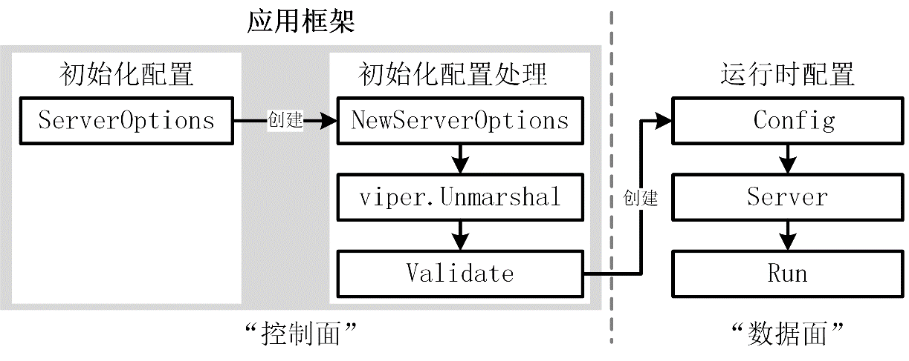

如何构建一个高质量的 Go 应用？
Go 项目开发的核心目标是构建一个能够满足产品需求的稳定应用。那么，该如何构建这样的应用呢？不同的开发者往往会采用不同的构建方式。
作为一名 Go 开发者，应从一开始就养成构建健壮应用的习惯，并掌握相关的构建技巧。合格的应用构建方式应具备以下几个特点：
- **应用代码结构清晰：**清晰的结构不仅便于阅读，还能减少后期改动引发的缺陷；
- **应用代码按功能隔离：**良好的隔离性可以确保后续代码变更不会相互干扰。例如，功能类代码的变更不会影响应用框架；
- **应用代码具有扩展性：**能够清楚地知道在哪一部分添加新的功能代码，并且在添加后，整个应用框架的逻辑仍然保持一致。
应用程序组成及构建方法
想要构建一个应用，首先需要了解应用程序的组成部分。一个 Go 应用通常由以下 3 部分组成：应用配置、应用启动框架、应用业务逻辑处理。在 Go 项目开发时，要选用合适的方式来构建这 3 部分功能，最终构建出一个能承载业务功能的优秀应用框架。
设计合理的应用仓库组织方式
在我的开发生涯中，发现很多开发者喜欢将一个应用的不同组件放在不同的仓库中，或者将不同应用的组件放在一个大仓中，这两种方式都会带来一些维护成本。
一个企业级应用通常会包含多个组件，例如：miniblog 项目就包含了 mb-apiserver、gen-gorm-model 两个组件。应用内各个组件之间的代码依赖、功能复用通常会比较密集。应用之间的代码依赖、功能复用相对较少。
如果将一个应用的不同组件，分别存放在不同的仓库中，不利于功能复用，并且组件源码分散存放，不利于同一个应用的代码维护。
在企业的源码管理方案中，通常有大仓和多仓两种源码仓库管理方式。使用大仓管理源码的优点是有利于不同应用之间的版本依赖管理，提高代码复用度，并且不同应用可以复用同一套源码管理方式，提高源码管理效率。但在真实的企业中，很少有团队能够发挥出大仓的优势，但是大仓带来的劣势却很突出，例如：
**包升级困难：**在大仓中，所有的应用组件都使用同一个 Go Modules 文件，这就导致如果升级应用 AppA 的依赖包 PackageA 的版本，如果 AppB 也使用了 PackageA，就可能会影响到应用 AppB 的功能稳定性，并且 AppB 可能根本不需要升级 PackageA；
**应用维护困难：**同一个应用的不同组件分散在大仓的不同目录中，难以查找和维护。
一个应用中不同的组件，对于同一个共享包往往有着相同的版本诉求，并且升级组件 A 的包 PackageA 时，通常会以应用维度，测试整个应用的功能，如果其他组件也使用到了 PackageA，那么潜在的缺陷通常也能够被发现。
所以，在企业应用开发中，建议以应用维度聚合应用中不同组件的源码。这种方式，既能够避免大仓带来的包升级困难、应用维护困难，又能够在同一应用，不同组件之间复用源码仓库管理功能、并提高不同组件之间的代码复用度。
以应用维度聚合不同组件的源码目录结构如下：
tree -F app-a
app-a
├── cmd/
│ ├── component-a/
│ └── component-b/
└── internal/
├── component-a/
└── component-b/
应用配置
应用配置用于对应用程序进行配置。例如，可通过配置指定应用需要连接的 MySQL 地址、监听的 HTTP 端口或支持的机型列表等。这些配置项为什么需要通过配置来指定？主要有以下 3 个原因：
- **不修改代码即可连接不同的环境：**例如，测试环境、开发环境与线上环境可能使用不同的 MySQL 地址，通过配置可以实现环境间的切换，而无需对程序代码进行修改；
- **安全性：**一些敏感信息不宜直接硬编码到代码中，需要通过配置的方式存放在配置文件中，这些配置文件会保存在比较安全的环境下；
- **提高发布效率与应用程序的稳定性：**通过修改配置而不是改动应用代码来改变应用行为，一方面可以快速实现期望的功能，另一方面也提高了程序的稳定性（配置变更通常比代码变更更加安全）。
那么，应用程序可以从哪些地方读取配置？通常可以从以下 4 个来源读取：
- **命令行选项（option）：**指以 - 或 -- 开头的选项参数，通常包含 0 或 1 个值，例如，--out-format=json 或 --help；
- **命令行参数（argument）：**指非选项参数，命令行中除了 option 以外的部分即为 argument，例如：pip install click 命令中的 install click；
- **配置文件：**通常为 YAML、JSON、TOML、INI、XML 等格式的文本文件；
- **分布式配置存储服务：**例如 Apollo、Etcd、Consul、Nacos 等。
提示：
执行 Shell 命令的一般方式为 command [options] [arguments]，其中[]内的内容为可选项。传递给命令的内容统一称为参数（argument），参数又分为选项（option）和普通参数（argument）。
虽然可以自行从零开发一种读取配置的方法，但更推荐使用社区成熟的 Go 包来读取不同位置的配置：
- **命令行选项、命令行参数：**可以使用 os 包、flag 包、pflag 包来读取。其中，os 包用于读取命令行参数，flag 包适合小型项目的简单参数解析，pflag 兼容 flag 包并支持高级功能，是大型开源项目中常用的命令行选项/参数解析工具；
- **配置文件：**可以使用支持特定配置文件格式的包（如 YAML 的 ghodss/yaml，JSON 的 encoding/json 等），或选择支持多种格式的工具包，例如 viper、configor、koanf 等；
- **环境变量：**可通过 os.Getenvf 方法或 envconfig 包读取环境变量；
- **分布式配置存储服务：**此类服务通常提供官方客户端包，例如 go.etcd.io/etcd/client/v3（Etcd）、github.com/hashicorp/consul/api（Consul）、github.com/nacos-group/nacos-sdk-go（Nacos）等。
推荐使用 pflag 处理命令行参数和命令行选项，选择 viper 等支持多种格式的 Go 包处理配置文件，通过 os.Getenv 或 envconfig 解析环境变量，根据需要选用 viper、Apollo、Etcd、Consul 工具从配置中心中读取配置。
对于一个 Go 应用，通常需要解析以下类型的配置：命令行选项、命令行参数和配置文件。基于上述分析，这里建议使用 pflag 与 viper 来实现这些功能。值得一提的是：viper 支持绑定 pflag 参数，通过这种绑定方式，可统一管理 pflag 与 viper 中的配置项。
尽管环境变量不适合作为应用程序的主要配置方式，但在某些场景下依然非常适用：
- **内容敏感：**针对一些敏感的配置内容，不适合通过命令行选项或配置文件直接以明文形式暴露时，可以通过环境变量加载这些配置内容；
- **临时配置：**例如，测试时需要对某用户进行特殊处理，可通过环境变量传递用户名，而无需为这种临时场景修改代码或新增命令行选项。
应用启动框架
应用启动框架可以理解为一个 main 函数，只不过这个 main 函数具有代码结构，并可能分散在多个 Go 源码文件中。在这个框架中，可以读取配置文件、初始化业务逻辑、启动 Web 服务等。示例代码如代码清单 5-1 所示。
代码清单 5-1 应用框架示例
package main
import (
"fmt"
"net/http"
"github.com/spf13/pflag"
)
const helpText = `Usage: main [flags] arg [arg...]
This is a very simple app framework (does nothing).
Flags:`
var (
addr = pflag.String("addr", ":8777", "The address to listen to.")
help = pflag.BoolP("help", "h", false, "Show this help message.")
usage = func() {
fmt.Println(helpText)
pflag.PrintDefaults()
}
)
func main() {
// 1. 命令行参数处理：解析，并读取命令行参数
pflag.Usage = usage
pflag.Parse()
if *help {
pflag.Usage()
return
}
// 2. 业务处理：初始化路由
http.HandleFunc("/", func(w http.ResponseWriter, r *http.Request) {
fmt.Fprint(w, "Hello world")
})
server := http.Server{Addr: *addr}
fmt.Printf("Starting http server at %s\n", *addr)
// 3. 业务处理：启动 HTTP Web 服务
if err := server.ListenAndServe(); err != nil {
panic(err)
}
}
上述 main 函数可以认为是最简单的平铺式应用框架。这个框架没有特定的功能，只是内嵌了启动服务需要的基本操作，例如：打印帮助信息、读取配置、初始化路由和启动 Web 服务。
当业务逻辑简单时，使用上述平铺式应用框架仍然可以保持代码的可读性和可维护性。但随着应用逻辑的复杂化，上述代码将变得冗长且难以维护。这时，需要引入一个优秀的应用框架来构建和管理应用程序。
业界有许多这样的应用框架，其中以下几款框架较为受欢迎（按星星数量排序）：cobra、urfave/cli、kingpin。其中，cobra 最受欢迎。cobra 功能强大、易用，代码质量高，许多优秀的开源项目（如 Kubernetes、Docker、Etcd、Hugo 等）均使用 cobra 构建应用。此外，它可以与 pflag 组合，提供更强大且易用的命令行参数处理能力。
应用业务逻辑处理
应用的业务逻辑因具体业务的不同而差别较大。一般而言，一个 Go 应用通常会执行以下类别的业务逻辑处理（可能涉及其中一个或多个）：
初始化缓存；
初始化并创建各类存储客户端，例如：Redis、MySQL、Kafka、MongoDB、Etcd 等；
初始化并创建其他服务的客户端；
初始化并启动 Web 服务，例如：HTTP、HTTPS、gRPC；
启动异步任务，这些异步任务可以执行任何业务需要的操作，例如：监听 kube-apiserver 的变更、定期从第三方服务拉取数据并缓存、注册/metrics 路由并监听指定端口、启动 Kafka 消费队列等。
最佳构建方法
可以使用 pflag、viper 和 cobra 来构建一个功能强大的应用程序，这一方法也是当前大多数团队的首选。pflag、viper 和 cobra 功能强大，每个包都包含丰富的内容供学习，并且互联网上也有许多相关教程，因此本节不再详细介绍。如果需要，可以阅读 docs/book/ 目录下的 pflag.md、viper.md 和 cobra.md 文件学习。
提升 Go 开发能力的重要方法之一是阅读优秀开源项目的源码。pflag、viper 和 cobra 这三个包功能强大，代码质量很高。在学习本课程的过程中，还可以通过阅读这三个项目的源码，进一步提高自身的开发能力。
miniblog 应用构建模型
miniblog 项目使用 pflag、viper、cobra 三个强大的 Go 包来构建应用的命令行选项、配置文件和应用启动框架。为了能够在未来承载更多的应用功能、应用配置，并且确保应用代码的可读性、可维护性和可扩展性，miniblog 项目参考 Kubernetes 的应用构建方式，设计了 miniblog 项目的应用构建模型，如图 5-1 所示。
图 5-1 miniblog 应用构建模型

在 miniblog 的应用构建模型中，有两大类配置：初始化配置和运行时配置。
初始化配置，是在程序启动时，通过命令行选项、环境变量或配置文件设置的配置。这类配置受限于配置方式，可能会缺少应用运行时需要的配置，例如 MySQL 客户端连接实例、第三方微服务客户端连接实例等配置（不可能通过命令行选项传递一个 MySQL 客户端连接实例）。这些连接实例，一般会基于初始化配置来创建或初始化。因此，在 miniblog 应用构建模型中，还有一个运行时配置。运行时配置包含了服务运行时依赖的配置，
初始化配置可能有很多配置项，并不是所有的配置项在程序启动时都需要设置，这类配置项一般可通过默认值来设置。所以在程序启动时，会通过 NewServerOptions 函数来创建一个带有默认值的初始化配置项变量。之后，通过命令行选项、环境变量、配置文件等方式来覆盖变量中指定的配置项，从而达到仅设置必要的配置项即可运行程序的目的，以此简化应用启动时的配置。
在 miniblog 应用构建模型中，还有一个步骤 viper.Unmarshal，这一步操作可以将 viper 读取的配置文件中的配置项保存在初始化配置变量中，从而用配置文件中的配置项覆盖默认的配置项。
此外，为了确保初始化配置可用，还需要对初始化配置进行校验，然后基于初始化配置创建一个运行时配置 Config。之后，便可以使用运行时配置 Config 来创建一个服务实例，并调用服务实例的 Run 方法，启动服务。
为了提高程序的稳定性和可维护性，miniblog 将初始化配置、应用框架构建部分代码保存在 cmd/mb-apiserver/app 目录下。将运行时配置及运行时代码保存在 internal/apiserver 目录中。从而达到类似于软件架构中“控制面”和“数据面”分开的效果。
在应用规模小、配置简单的情况下，初始化配置和运行时配置一般能保持一致。但是当应用规模变大时，使用运行时配置，专门管理程序运行时的配置项，会大大降低应用代码的维护复杂度。
构建 miniblog 应用框架
本节课前半部分，详细介绍了 miniblog 项目的应用构建思路和设计方法。本节课接下来，会手把手教你从零开始构建一个 Go 应用。
miniblog 使用 cobra 来构建 Go 应用框架。使用 cobra 框架，需要创建 *cobra.Command 类型的对象。为了保证 main 文件代码清晰易读，需要将创建 *cobra.Command 类型对象的代码保存到 cmd/mb-apiserver/app/server.go 文件中。
你可以根据需要重命名 server.go 文件名，例如，将其重命名为 app.go、miniblog.go 等名称。关于文件命名，根据我的开发经验，我有以下建议：如果没有特殊命名需要，可以考虑将文件名命名为项目无关的名称，例如 server.go。这样就可以在所有同类项目中，保持文件名一致，从而减轻再理解成本。另外，如果你想复制该项目，并魔改为一个新项目，这类项目无关的命名方式，可以减轻新项目，重新命名文件名的工作量。
修改后的 cmd/mb-apiserver/main.go 文件代码如代码清单 5-2：
代码清单 5-2 修改后 main 文件代码
package main
import (
"os"
"github.com/ketitongxue/miniblog/cmd/mb-apiserver/app"
// 导入 automaxprocs 包，可以在程序启动时自动设置 GOMAXPROCS 配置，
// 使其与 Linux 容器的 CPU 配额相匹配。
// 这避免了在容器中运行时，因默认 GOMAXPROCS 值不合适导致的性能问题，
// 确保 Go 程序能够充分利用可用的 CPU 资源，避免 CPU 浪费。
_ "go.uber.org/automaxprocs"
)
// Go 程序的默认入口函数。阅读项目代码的入口函数。
func main() {
// 创建迷你博客命令
command := app.NewMiniBlogCommand()
// 执行命令并处理错误
if err := command.Execute(); err != nil {
// 如果发生错误，则退出程序
// 返回退出码，可以使其他程序（例如 bash 脚本）根据退出码来判断服务运行状态
os.Exit(1)
}
}
代码清单 5-2 中的 main 文件只有核心的启动代码，具体的代码实现保存在 cmd/mb-apiserver/app/server.go 文件中。将 main 入口放在 cmd/mb-apiserver/main.go 目录中，将具体的代码实现放在 cmd/mb-apiserver/app/目录下，可以确保 main 入口函数简单，利于 main 函数的定位。另外，确保 main 函数简单、独立，可以支持使用以下命令来便捷的安装应用：
$ go install github.com/onexstack/miniblog/cmd/mb-apiserver
如果 cmd/mb-apiserver 包含了不可导出的函数、变量或其他标识符，在执行 go install github.com/onexstack/miniblog/cmd/mb-apiserver 安装应用时会报错。
在 main 文件中，通过导入匿名包 _ "go.uber.org/automaxprocs"，用来在程序启动时自动设置 GOMAXPROCS 配置，使其与 Linux 容器的 CPU 配额相匹配。通过正确设置容器的 CPU 配额，可以解决 GOMAXPROCS 可能设置过大，导致生成线程过多，从而导致严重的上下文切换，浪费 CPU，降低程序性能的潜在问题。
新建 cmd/mb-apiserver/app/server.go 文件，在该文件中实现创建 *cobra.Command 实例的函数，如代码清单 5-3 所示。
代码清单 5-3 NewMiniBlogCommand 函数实现
// NewMiniBlogCommand 创建一个 *cobra.Command 对象，用于启动应用程序。
func NewMiniBlogCommand() *cobra.Command {
cmd := &cobra.Command{
// 指定命令的名字，该名字会出现在帮助信息中
Use: " mb-apiserver",
// 命令的简短描述
Short: "A mini blog show best practices for develop a full-featured Go project",
// 命令的详细描述
Long: `A mini blog show best practices for develop a full-featured Go project.
The project features include:
• Utilization of a clean architecture;
...
• High-quality code.`,
// 命令出错时，不打印帮助信息。设置为 true 可以确保命令出错时一眼就能看到错误信息
SilenceUsage: true,
// 指定调用 cmd.Execute() 时，执行的 Run 函数
RunE: func(cmd *cobra.Command, args []string) error {
fmt.Println("Hello MiniBlog!")
return nil
},
// 设置命令运行时的参数检查，不需要指定命令行参数。例如：。/miniblog param1 param2
Args: cobra.NoArgs,
}
return cmd
}
通过 NewMiniBlogCommand 函数初始化并创建了一个 *cobra.Command 对象，在创建该对象时，指定了以下应用信息和设置：命令的名字、命令的简短描述、命令的详细描述、设置命令出错时不打印帮助信息、指定调用 cmd.Execute() 时执行的 RunE 函数、设置命令运行时不需要指定命令行参数的校验函数。
编译并运行 mb-apiserver 程序，命令如下：
$ make build
$ _output/mb-apiserver -h
A mini blog show best practices for develop a full-featured Go project.
The project features include:
• Utilization of a clean architecture;
...
• High-quality code.
Usage:
mb-apiserver [flags]
Flags:
-h, --help help for mb-apiserver
可以看到，通过 cobra 构建的应用默认具备 --help 命令行选项，并且执行 _output/mb-apiserver -h 后生成的输出内容更加易读且信息丰富。
至此，完成了 miniblog 应用框架的开发，完整代码见分支 feature/s02。
注意：
如果当前处于 master 分支并执行 make 或 make build 命令，编译生成的 mb-apiserver 二进制文件路径为 _output/platforms/linux/amd64/mb-apiserver，在启动服务时，需要指定该路径而不是使用_output/mb-apiserver 路径。